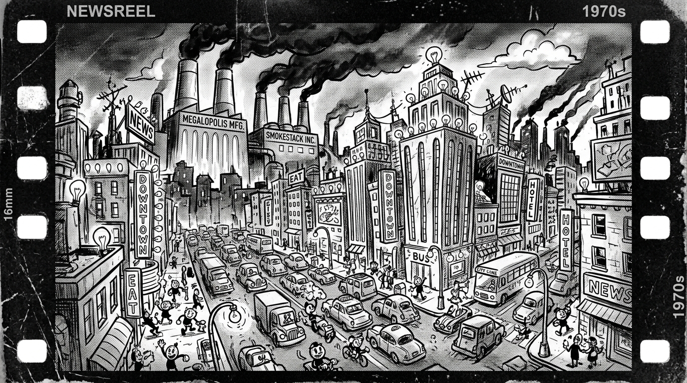
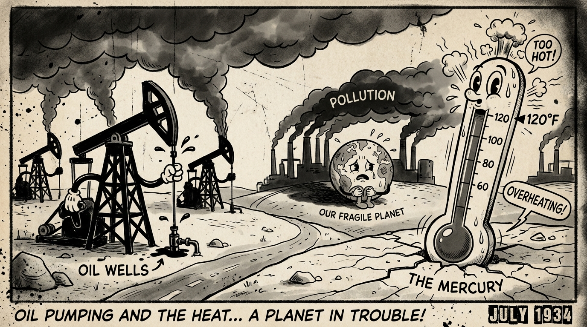
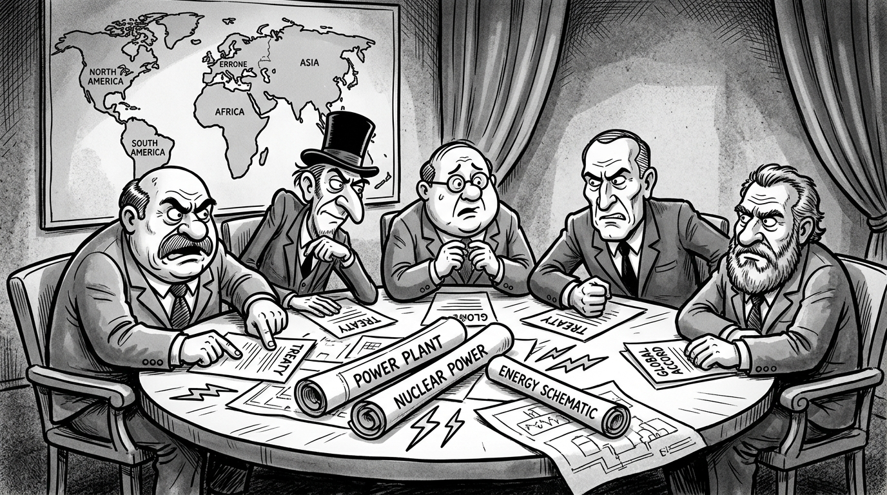
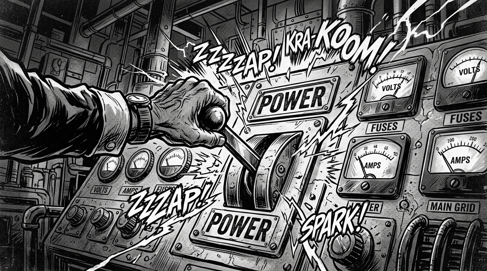

CENA 1: A EXPLOSÃO DO CONSUMO (1970)
"O ano é 1970! O mundo marcha a passos largos rumo ao progresso industrial. Máquinas que nunca dormem, cidades iluminadas dia e noite e um apetite insaciável por energia!"

CENA 2: O SINAL DE ALERTA
"Mas a locomotiva do desenvolvimento encontra seus limites! Secas severas esvaziam grandes represas, o petróleo torna-se uma arma de disputa geopolítica e as rotas marítimas mundiais entram em colapso!"

CENA 3: A GRANDE CÚPULA INTERNACIONAL
"Nenhuma nação é uma ilha! Isolados, todos enfrentam o colapso. Juntos, os líderes mundiais são convocados para a mais decisiva conferência internacional da história recente."

CENA 4: A CONVOCAÇÃO DO JOGADOR
"Você assume o comando da política energética de sua pátria. Comércio, diplomacia, ciência e coragem. O destino de cinquenta anos de história está sob o seu controle. Que comece a corrida energética!"